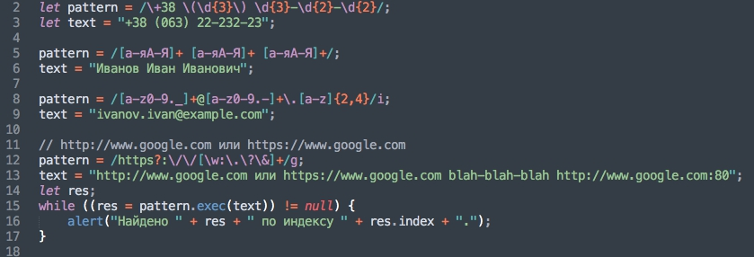
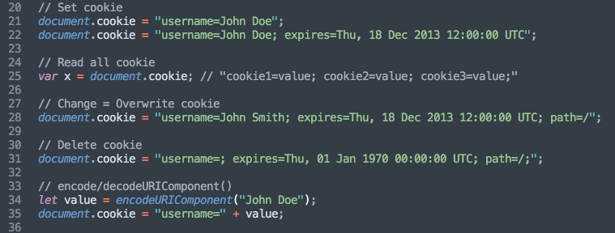
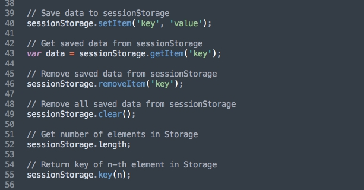

Регулярные выражения - это шаблоны используемые для сопоставления последовательностей символов в строках.
Создание регулярного выражения:
let pattern1 = /\d\d\d/g;
let pattern2 = new RegExp("\\d\\d\\d", "g");
Метасимволы:
\w - любой алфавитно-цифровой символ в верхнем и нижнем регистре и символ подчеркивания
\W - любой символ не являющийся подчеркиванием и не относящийся к алфавитно-цифровым
\s - любой пробельный символ
\S - любой не пробельный символ
\d - любая цифра (digit)
\D - любой не цифровой символ
\v - (вертикальная табуляция)
\t - (табуляция)
\r - (перевод каретки)
\n - (перевод строки)
\f - (перевод страницы)
Наборы символов:
/[RrGgBb]/ - cоответствие указанным символам
/[d-z]/ - cоответствие символам английского алфавита в нижнем регистре
/[0-9]+/ - cоответствие указанным цифрам
[^3-9] - cоответствие с чем угодно кроме цифр заданного диапазона
Квантификатор (Кванторы):
+ oдин или несколько символов
* ноль и более символов
? ноль или одно вхождение
Якорные символы:
^ начало строки
$ конец строки
\b соответствует границе слова
Интервалы:
{3} - точное количество совпадений
{2,3} - диапазон
{3,} - не менее
{,3} - не более
Флаги:
i - выполнение поиска не чувствительного к регистру
g - выполнение глобального поиска
m - многострочный режим
y - выполняет поиск начиная с символа, который находится на позиции свойства lastindex текущего регулярного выражения.
Методы RegExp:
exec - выполняет поиск совпадения в строке, возвращает массив
test - тестирует совпадение в строке, возвращет true/false
Методы String:
match - выполняет поиск совпадения в строке, возвращет массив данных либо null
search - тестирует на совпадение в строке, возвращет индекс совпадения, или -1
replace - выполняет поиск совпадения в строке, и заменяет совпавшую подстроку другой подстрокой переданной как аргумент в этот метод
split - использует регулярное выражение или фиксированую строку чтобы разбить строку на массив подстрок
Пример

Создать регулярное выражение, которое будет тестировать url на совпадение с route: /documents/books или /documents/pictures.
Cookie
Cookies позволяют сохранять пользовательскую информацию для веб-страниц.

Атрибуты cookie:
name
value
expires
max-age
path
domain
secure
Создать 2 cookie с произвольной информацией.
Первый удалить, а во втором поменять информацию.
Local/Session Storage
Интерфейс Storage из Web Storage API предоставляет доступ для session storage или local storage для конкретного домена, позволяя вам к примеру добавлять, изменять или удалять сохранённые элементы данных.
Разница только в том, что свойство sessionStorage хранит данные в течение сеанса (до закрытия браузера), в отличие от данных, находящихся в свойстве localStorage, которые не имеют ограничений по времени хранения и могут быть удалены только с помощью JavaScript.

Сохранить в localStorage любимый цвет.
Websockets
Вебсокеты это продвинутая технология, позволяющая открыть постоянное двунаправленное сетевое соединение между браузером пользователя и сервером.
Для открытия соединения достаточно создать объект WebSocket, указав в нём специальный протокол ws (wss).
let socket = new WebSocket("ws://google.com");
Создать видео плеєр (на доработку дома)
Создать видео плеєр с собственным интерфейсом с возмодностю выбора выдео
Выдео по сылке https://deutsche-it-schule.com.ua/uploads/videos.json/